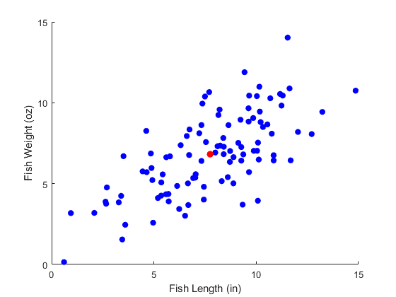
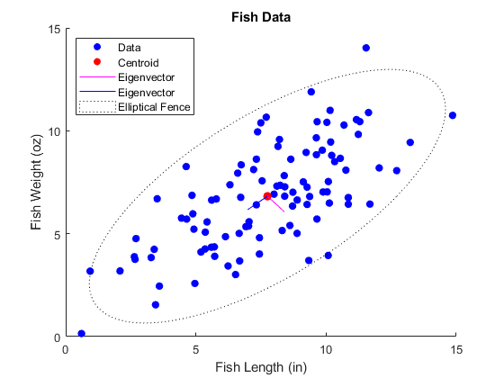
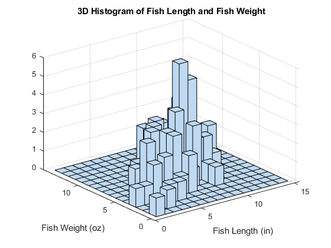

Contents
close all
clear all
clc
[f_id, f_length, f_weight] = textread('Rock_bass_data(1).txt', '%f%f%f', 'headerlines', 1);
x1m = mean(f_length);
x2m = mean(f_weight);
f0 = figure('Name', 'Preliminary Stats');
mksz = 40;
h0 = scatter(f_length, f_weight, mksz, 'blue', 'filled');
hold on
h1 = scatter(x1m, x2m, mksz + 10, 'red', 'filled');
xlabel('Fish Length (in)')
ylabel('Fish Weight (oz)')
hold on
xm_tot = [x1m x2m];
xm_m = repmat(xm_tot, length(f_id), 1);
a1 = [f_length f_weight];
D = a1 - xm_m;
S = 1/(100-1) * D' * D;
D1s = D(:,1).*D(:,1);
D1p = sqrt(sum(D1s));
D2s = D(:,2).*D(:,2);
D2p = sqrt(sum(D2s));
G = [1/D1p 0; 0 1/D2p];
R = G * (D' * D) * G;

Part B
[V, LAMBDA] = eig(S);
ev1 = line([x1m V(1,1)+x1m ], [x2m V(2,1)+x2m ]);
ev1.Color = 'm';
ev2 = line([x1m V(1,2)+x1m ], [x2m V(2,2)+x2m ]);
ev2.Color = 'b';
hold on
S_inv = inv(S);

Part C
my_distances = 0.2429 .* D(:,1).^2 - 0.3708 .* D(:,1) .* D(:,2) + 0.2993 .* (D(:,2).^2);
theta = 0:2*pi/360:2*pi;
eqn = 0.2429.*(cos(theta)).^2 + 0.2993.*(sin(theta)).^2 - 0.3708.*cos(theta).*sin(theta);
r = sqrt(5.99./eqn);
xc3 = r.*cos(theta) + x1m;
yc3 = r.*sin(theta) + x2m;
el2 = patch([xc3], [yc3], length(theta), 'LineStyle', ':');
el2.FaceAlpha = 0;
lgd = legend('Data', 'Centroid', 'Eigenvector', 'Eigenvector', 'Elliptical Fence' );
lgd.Location = 'northwest';
title('Fish Data')
disp('I have picked 0.05 for the alpha value');
disp('From the chi-sqare table, the critical c_squared is = 5.99');
f1 = figure('Name', 'Historgram of Statistical Distance');
[occurrences, bin_centers] = hist(my_distances, [0:0.5:10]);
h2 = bar(bin_centers, occurrences,0.4);
axis([0 10 0 25]);
grid on;
ylabel('Occurences');
xlabel('(Statistical Distance)^2 from centroid');
title('Distance Bins');
I have picked 0.05 for the alpha value
From the chi-sqare table, the critical c_squared is = 5.99


Part D
out_ind = find(my_distances > 5.99);
out_fid = f_id(out_ind);
f2 = figure('Name', 'Hist3D');
nbinx = 15;
nbiny = 15;
hist3([f_length f_weight], 'Nbins', [nbinx,nbiny])
xlabel('Fish Length (in)')
ylabel('Fish Weight (oz)')
title('3D Histogram of Fish Length and Fish Weight')

Echo
diary vj_prob1.txt
echo on
x1m
x2m
D
S
R
V
LAMBDA
S_inv
my_distances
disp('I have picked 0.05 for the alpha value');
disp('From the chi-sqare table, the critical c_squared is = 5.99');
out_fid
echo off
%x1 mean
x1m
x1m =
7.7474
%x2 mean
x2m
x2m =
6.8205
%Deviation Matrix D
D
D =
-1.2246 -3.8057
-0.7062 -1.2368
3.9361 -0.3826
-6.8071 -3.6400
-1.6121 -1.9653
7.1107 3.9273
-2.0260 -2.9182
-2.0389 -2.4605
-2.8657 -0.8555
3.4181 3.7221
-7.1405 -6.6723
-0.0461 3.8395
0.8625 -1.4211
0.8965 1.7973
2.9400 3.4585
1.9076 3.6200
1.5225 -0.3990
-3.1026 -1.1115
0.6627 0.0026
-4.4653 -2.9795
2.5804 1.6812
-0.2040 0.7500
1.6205 -0.0132
-1.0259 -0.0539
3.7889 7.2085
3.0120 1.2674
-4.2338 -0.1234
-5.1118 -2.9376
-5.0852 -3.0642
2.1344 0.2061
1.8808 2.0163
-2.3929 -2.5619
2.3346 -2.8789
0.6675 0.4572
-4.3492 -2.5777
-2.1426 -0.1906
-3.2990 -1.0635
3.4883 3.0049
-0.4246 1.8002
-4.1493 -4.3651
-2.7869 -4.2379
-1.4406 0.5573
2.7980 1.8411
0.5664 -1.6672
2.2836 3.5904
1.3770 0.6986
0.4890 0.5335
-1.9642 -0.1319
2.4285 2.6336
-0.3784 3.1286
-2.8231 -1.6009
-4.2976 -5.2750
3.5486 3.6262
1.9001 -1.1097
-3.1206 1.4419
-0.7256 -1.4497
2.4054 4.1727
-2.1556 -2.4763
1.1376 -1.8030
1.8774 2.8390
-1.5116 -3.3886
-0.5300 1.2957
2.4676 1.9849
2.3387 0.7131
1.1430 -0.1816
1.6810 5.0723
2.2957 0.2102
-2.3182 -1.2482
-0.3070 -2.0157
3.1047 -0.3879
-0.8290 -1.4787
-0.2529 3.5673
4.9637 1.2441
-1.0856 -1.8049
0.9636 -0.4774
-1.1425 1.1216
-0.3082 -2.8078
2.1056 2.2377
-1.0667 -3.1439
0.9777 0.1948
1.5877 -3.1229
-2.8973 0.0450
1.4851 2.1275
-5.6618 -3.6301
0.6447 1.0033
5.4830 2.6136
3.8822 4.0655
0.3628 0.4932
0.4042 2.4230
1.5225 0.4423
2.3787 -0.3315
0.2533 0.1000
4.2920 1.3767
-1.0073 1.5270
-5.0477 -2.0585
-2.5526 -2.7092
-0.4254 -0.4169
0.4627 2.7596
-2.3867 -1.7475
3.1042 -0.0629
%Sample Covariance
S
S =
7.8117 4.8406
4.8406 6.3410
%Pearson Correlation Coefficient Matrix R
R
R =
1.0000 0.6878
0.6878 1.0000
%V
V
V =
0.6518 -0.7584
-0.7584 -0.6518
%LAMBDA
LAMBDA
LAMBDA =
2.1802 0
0 11.9725
%Covariance inverse S^-1
S_inv
S_inv =
0.2429 -0.1854
-0.1854 0.2993
%Distance Values
my_distances
my_distances =
2.9709
0.2551
4.3653
6.0332
0.6125
6.5428
1.3535
0.9615
1.3048
2.2669
8.0432
4.4785
1.2396
0.5646
1.9093
2.2455
0.8359
1.4293
0.1060
2.5669
0.8547
0.2352
0.6458
0.2360
8.9121
1.2688
4.1650
3.3619
3.3137
0.9561
0.6699
1.0821
6.2965
0.0576
2.4263
0.9746
1.6812
1.7714
1.2972
3.1688
2.8825
0.8948
1.0060
1.2599
2.0848
0.2499
0.0465
0.8463
1.1369
3.4035
1.0272
4.4084
2.2229
2.0273
4.6563
0.3668
2.8950
0.9847
2.0478
1.2922
2.0924
0.8254
0.8421
0.8623
0.4041
5.2253
1.1144
0.6988
1.0094
2.8328
0.3668
4.1590
4.1580
0.5347
0.4643
1.1688
2.0617
0.8285
1.9911
0.1729
5.3696
2.0880
0.7189
4.1095
0.1624
4.0331
2.7554
0.0384
1.4338
0.3719
1.6996
0.0092
2.8507
1.5148
3.6044
1.2152
0.0302
1.8579
0.7511
2.4141
disp('I have picked 0.05 for the alpha value');
I have picked 0.05 for the alpha value
disp('From the chi-sqare table, the critical c_squared is = 5.99');
From the chi-sqare table, the critical c_squared is = 5.99
%outlier f_id
out_fid
out_fid =
4
6
11
25
33
echo off